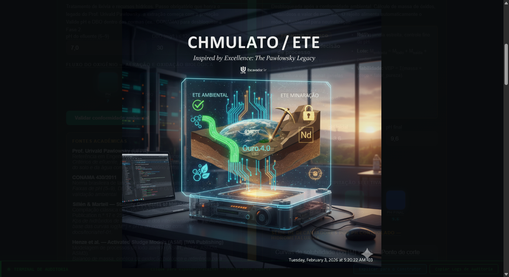
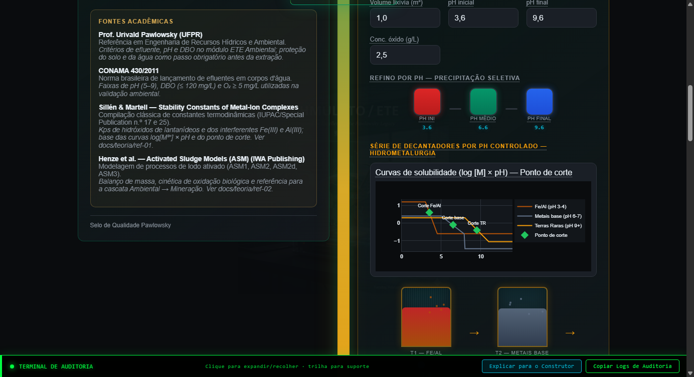
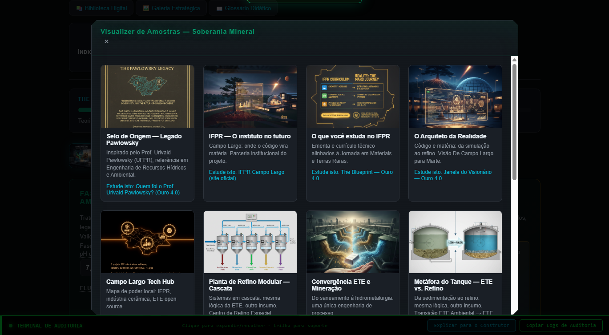
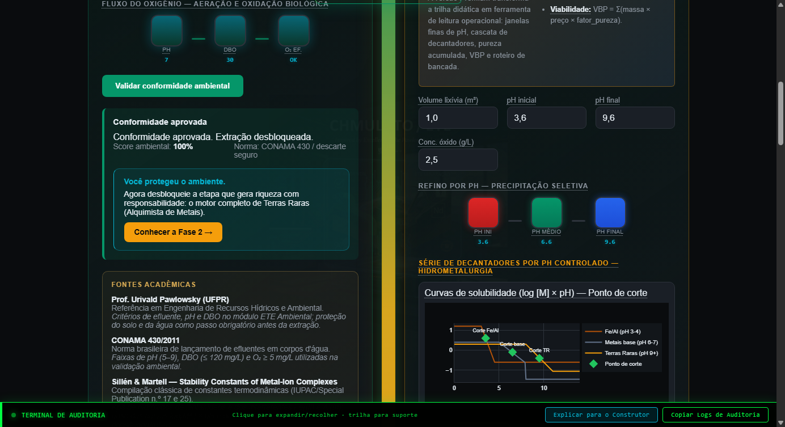
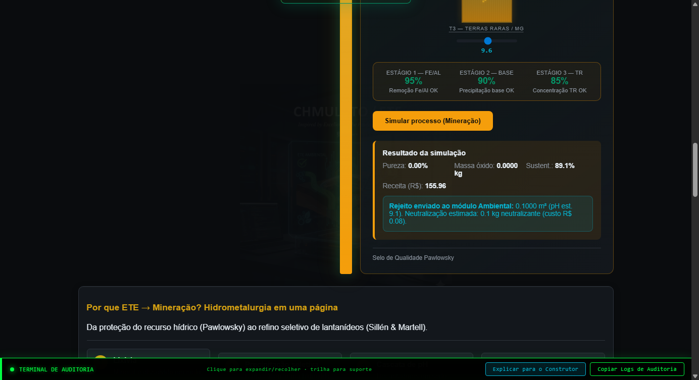

Explore em formato HTML o mesmo roteiro cognitivo do instalador Windows: validação ambiental, paywall Premium (Golden Gate), inventário visual da narrativa Campo Largo, laboratório de precipitação e resultado da simulação (métricas ligadas a valor). O objetivo é entender o artefacto Python empacotado antes de o distribuir ou instalar.
Atenção: esta página não corre o simulador — apenas mostra screenshots gerados a partir do Flask do Minerador 4.0. Os valores visíveis correspondem a uma sessão de captura (headless Chrome); na sua máquina os números mudam com as entradas.
127.0.0.1:5150 — API e páginas do centro de controle.dist/.Use os separadores para seguir a ordem típica no desktop. Imagens em docs/assets/img/; para regenerar: python scripts/capture_degustacao_screenshots.py na raiz do repositório (Chrome + Selenium).
Primeira experiência: painel Fase 1 — Guardião Ambiental. Validação de pH, DBO e feedback do motor; ao aprovar, o passo Mineração desbloqueia o botão de simulação.

Golden Gate / Premium: no cartão Mineração, overlay com upgrade Ouro 4.0, PIX simbólico e campo de chave MIN40-…. No instalador, a licença persiste localmente após ativação.

Campo (narrativa visual): no produto atual, o inventário de imagens estratégicas abre no modal Galeria Estratégica — conecta Campo Largo, selos, fluxos ETE→Mineração e materiais didáticos.

/api/asset-cards.Lab: entradas de volume e pH, cascata de tanques e série de decantadores — o Flask chama o motor ao clicar em «Simular processo (Mineração)».

Mercado / resultado: após a simulação, o cartão de resultado lista métricas (pureza, massas, receita em R$ onde aplicável) e liga à soberania mineral — leitura económica alinhada ao discurso do produto.

| Este ficheiro (degustação) | Minerador40.exe (artefacto) |
|---|---|
| Navegador, sem instalação. | Windows, empacotado com motor e dependências. |
| Imagens estáticas (PNG) de uma sessão de captura — atualizáveis por script. | Cálculos e UI dinâmicos ao mudar entradas (motor Python no binário). |
| Ideal para onboarding e alinhamento de equipas. | Ideal para alunos, laboratório e demonstrações completas. |
| Pode ser enviado por e-mail ou hospedado em GitHub Pages. | Distribuído com checksums (checksum.sha256) e guia INSTALACAO.md. |
Copie ou adapte estas três frases depois de mostrar o roteiro acima. Numere com os dados da sua sessão real no Minerador ou no Streamlit Mineração.
Quadro completo de perguntas do comité e limites do modelo: One-pager para negócio.
← Portal principal · Código & decisão · Apostila efluentes · Artigo executivo · Feedback